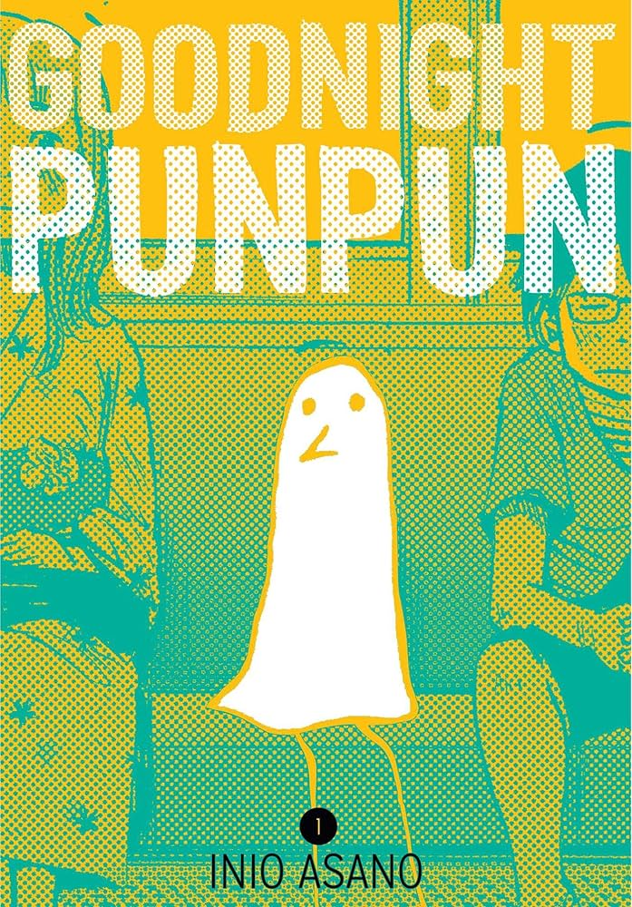

Berserk sigue la vida de Guts, un guerrero marcado por la violencia y la traición, en un mundo medieval oscuro.
La obra explora temas de destino, poder y resistencia frente al mal, así como la lucha interna entre la humanidad
y la brutalidad. La narrativa combina fantasía oscura con un análisis profundo de la psicología de los personajes
y la sociedad feudal.
Autor del manga — Kentaro Miura
Vagabond
Basado en la vida de Miyamoto Musashi, Vagabond narra la evolución de un samurái desde su juventud hasta su maestría
en la espada. La obra reflexiona sobre la superación personal, la filosofía del combate y la búsqueda del sentido de la vida.
Sus ilustraciones realistas y detalladas destacan por capturar la fuerza física y la espiritualidad del personaje.
Autor del manga — Takehiko Inoue
Monster
El manga sigue a Tenma, un neurocirujano que persigue a un asesino en serie que él mismo salvó de la muerte.
La obra profundiza en temas de moralidad, culpa, identidad y el mal en la sociedad humana. La narrativa es un thriller
psicológico que cuestiona la naturaleza de la justicia y cómo las decisiones individuales pueden alterar la vida de muchos.
Autor del manga — Naoki Urasawa
Oyasumi Punpun
Punpun, representado como un pájaro estilizado, crece enfrentando traumas familiares, amor, soledad y las dificultades
de la adolescencia y adultez. El manga explora la alienación, la depresión y la búsqueda de significado, mezclando realismo
y simbolismo. Obra introspectiva y poética, centrada en la psicología del protagonista.

Autor del manga — Inio Asano
Adabana
Adabana comienza con el asesinato de Mako Igarashi en una pequeña ciudad. Su amiga Mizuki Aikawa confiesa el crimen,
pero durante la investigación surgen versiones contradictorias. La obra aborda trauma, explotación y presiones familiares,
mostrando cómo las circunstancias personales pueden llevar a decisiones extremas.
Autor del manga — NON
Vinland Saga
Ambientado en la era vikinga del siglo XI, Vinland Saga cuenta la historia de Thorfinn, un joven guerrero que busca vengar
la muerte de su padre mientras se ve envuelto en batallas, conquistas y conflictos morales. La obra combina acción y drama
con una profunda reflexión sobre la guerra, la libertad y el verdadero significado de la paz.
Autor del manga — Makoto Yukimura
The Climber
The Climber narra la historia de Mori Buntarō, un joven introvertido que descubre su pasión por la escalada. A través de su
lucha contra la naturaleza y sus propios límites, el manga explora temas de soledad, superación y búsqueda de propósito.
Destaca por su arte realista y enfoque psicológico que convierte cada ascenso en una metáfora de la vida.